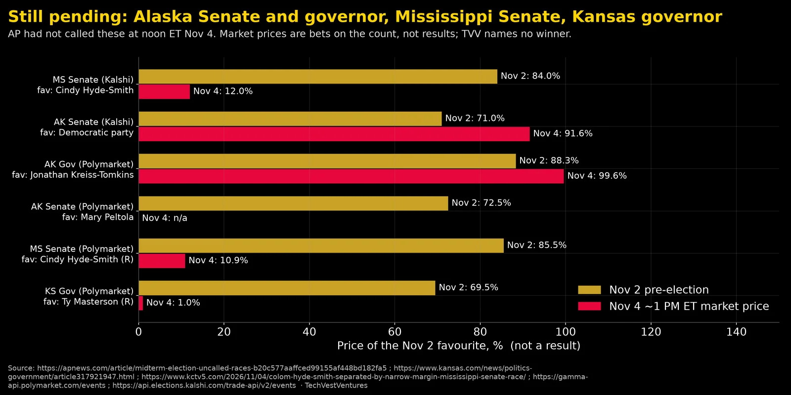

PendingTVV RISK CENTER
Races AP had not called. TVV names no winner until they are called; a later update pass will score them.

Source: https://apnews.com/article/midterm-election-uncalled-races-b20c577aaffced99155af448bd182fa5 https://www.kansas.com/news/politics-government/article317921947.html https://www.kctv5.com/2026/11/04/colom-hyde-smith-separated-by-narrow-margin-mississippi-senate-race/ https://gamma-api.polymarket.com/events https://api.elections.kalshi.com/trade-api/v2/events